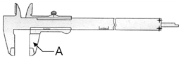
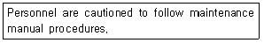
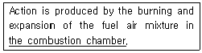

항공기관정비기능사 (2010-07-11 기출문제)
1과목: 비행원리
1. 충격파를 통과한 공기의 특성변화에 대한 설명으로 옳은 것은?
- 압력과 속도가 감소한다.
- 밀도는 감소하고, 속도가 증가한다.
- 압력이 증가하고, 속도는 감소한다.
- 압력이 감소하고, 속도가 증가한다.
(정답률: 69%)

2. 다음 중 날개에 사용되는 공력 보조장치가 아닌 것은?
- 단순 플랩
- 크루거 플랩
- 리드－래그
- 경계층 제어장치
(정답률: 66%)
3. 천음속으로 수평 비행하는 비행기가 비행속도를 무리하게 증가시키면 날개가 이상진동을 하는 현상이 발생되는데 이것을 무엇이라 하는가?
- 버피팅(Buffeting)
- 트리밍(Trimming)
- 피치 업(Pitch up)
- 턱 언더(Tuck under)
(정답률: 76%)
4. 헬리콥터가 전후좌우의 방향으로 이동하지 않고 일정한 고도를 유지하며 공중에 떠 있는 상태를 무엇이라 하는가?
- 페더링
- 자동 회전
- 정지 비행
- 지면 효과
(정답률: 79%)
5. 헬리콥터의 회전날개에 의해 발생되는 양력에 대한 설명으로 옳은 것은?
- 깃 끝에서 발생되는 양력만을 말한다.
- 깃 뿌리에서 발생되는 양력만을 말한다.
- 깃 중심에서 발생되는 양력만을 말한다.
- 전체 깃 면적에 발생되는 양력을 합한 것을 말한다.
(정답률: 80%)
6. 비행기의 동적 세로 안정에 있어서 받음각이 거의 일정하며 주기가 매우 길고 조종사가 느끼지 못하는 운동을 어느 것인가?
- 단주기 운동
- 장주기 운동
- 승강키 자유운동
- 플래핑 운동
(정답률: 82%)
7. 비행기의 무게가 1500kgf이고, 여유마력이 150마력일 때 상승률은 몇 m/s인가?
- 0.13
- 1.30
- 7.5
- 75
(정답률: 71%)
8. 선회 경사각 로 정상수평선회하는 비행기의 하중배수는 얼마인가?
- 0.6
- 1.2
- 2
- 4
(정답률: 64%)
9. 다음 중 원형관 속을 흐르는 유체의 흐름이 층류에서 난류로 변하는데 관계되는 요소가 아닌 것은?
- 유체의 속도
- 관의 지름
- 유체의 점성
- 유체의 마하수
(정답률: 51%)
10. 비행기가 등속수평비행할 때 힘의 관계를 옳게 나타낸 것은? (단, 비행기의 무게 W, 추력 T, 양력 L, 항력 D이다.)
- D＝T, L＜W
- D＝T, L＞W
- D＝T, L＝W
- D＜T, L＝W
(정답률: 83%)
11. 날개에 양력이 발생하는 이유를 설명한 것으로 옳은 것은?
- 날개 앞전이 원 모양을 갖고 있기 때문이다.
- 날개 윗면과 아랫면의 압력이 같기 때문이다.
- 날개 앞전의 속도가 뒷전보다 빠르기 때문이다.
- 날개 윗면에서는 유속이 바르고 아랫면에서는 유속이 느리기 때문이다.
(정답률: 83%)
12. 날개의 공력특성을 좌우하는 날개골(Airfoil) 모양의 주된 요소가 아닌 것은?
- 가로세로비
- 앞전반지름
- 날개골의 두께
- 캠버의 크기
(정답률: 53%)
13. 세로축은 비행기의 전후축이라 하며 또한 X축이라고도 하는데, 이 축에 관한 모멘트는 무엇인가?
- 동적 모멘트(Dynamic Moment)
- 옆놀이 모멘트(Rolling Moment)
- 빗놀이 모멘트(Yawing Moment)
- 키놀이 모멘트(Pitching Moment)
(정답률: 77%)
14. 절대 습도가 일정한 상태에서 온도가 올라가면 상대습도는 어떻게 되는가?
- 올라간다.
- 변함없다.
- 내려간다.
- 포화 상태로 된다.
(정답률: 49%)
15. 공기를 강체(Rigid body)라 가정하고 프로펠러 깃이 1회전 할 때 프로펠러가 진행하는 거리를 무엇이라 하는가?
- 유효 피치(Effective pitch)
- 산술적 피치(Arithmetic pitch)
- 기하학적 피치(Geometric pitch)
- 평균 공력 피치(Mean aerodynamic pitch)
(정답률: 67%)
16. 히드라진을 취급할 때의 안전사항이 아닌 것은?
- 환기가 잘 되도록 한다.
- 인화성 물질이므로 15m 내의 흡연을 금한다.
- 유자격자가 취급하고 보호장구를 착용하여야 한다.
- 피부에 묻으면 즉시 세척하고 의사의 진찰을 받는다.
(정답률: 54%)
17. 다음 중 항공기의 정비에서 개조에 대한 설명으로 옳은 것은?
- 항공기의 각 부분의 점검, 조절, 검사, 교환 등의 작업을 말한다.
- 장비나 부품에 대한 원래의 설계를 변경 또는 부품을 추가로 장착시킬 때 실시하는 작업을 말한다.
- 항공기의 부품과 장비 등에서 손상 또는 기능 불량 등을 원래 상태로 회복시키는 작업이다.
- 항공기의 세척, 보급 등의 작업을 통해 안전한 비행을 할 수 있도록 하는 작업을 말한다.
(정답률: 85%)
18. 한쪽 물림 턱은 고정되어 잇고 다른 쪽 턱은 손잡이에 설치된 나사형 스크루를 조작하여 렌치의 개구부 크기를 조절하는 렌치는?
- 박스(Box) 렌치
- 오픈－엔드(Open－end)렌치
- 래치팅(Ratcheting) 렌치
- 어저스트에블(Adjustable) 렌치
(정답률: 60%)
19. 다이얼식 표준 토크 렌치의 눈금 표시판에 잇는 안쪽 눈금과 바깥쪽 눈금의 용도를 옳게 설명한 것은?
- 볼트의 지름에 따라 구별하여 사용한다.
- 바깥쪽 눈금은 안쪽 눈금의 10배에 해당하는 토크값이다.
- 왼쪽, 혹은 오른쪽으로 토크를 줄 때 각각 구별하여 사용한다.
- 안쪽 눈금은 토크값을, 바깥쪽 눈금은 바늘의 회전수를 지시한다.
(정답률: 46%)
20. 외측 마이크로미터 중 마이크로미터의 손상을 방지하고 측정오차가 발생하지 않도록 하기 위한 마이크로미터의 구성품은?
- 앤빌
- 스핀들
- 랫치 스톱
- 클램프
(정답률: 55%)
2과목: 항공기정비
21. 볼트 머리나 너트 쪽에 부착시켜 체결하는 하중을 분산시키거나, 그립 길이를 조정하거나 또는 풀림을 방지하는 목적으로 쓰이는 것은?
- 와셔
- 핀
- 턴버클
- 캐슬 전단 너트
(정답률: 79%)
22. 항공기 기체 외부 금속표면, 도장부분, 배기계통 세척에 사용하는 클리닝(Cleaning) 종류가 아닌 것은?
- 습식 세척
- 열 세척
- 건식 세척
- 광택 작업
(정답률: 63%)
23. 항공기의 장비 및 기기가 수리, 조절 또는 검사 중일 때 이들 장비의 작동을 방지하기 위하여 표시하는 색채는?
- 주황색
- 노란색
- 파란색
- 검은색
(정답률: 58%)
24. 다음 그림과 같은 항공기 유도 수신호가 의미하는 것은?
- 서행
- 촉괴기
- 기관감속
- 긴급 정지
(정답률: 84%)
25. 그림과 같은 버니어캘리퍼스에서 “A"가 지시하고 있는 부분의 명칭은?

- 어미자
- 어미자 조
- 깊이 바
- 슬라이드 조
(정답률: 64%)
26. 양극 산화 처리를 하기 전에 수행하여야 할 전처리 작업이 아닌 것은?
- 래크작업
- 사전세척작업
- 마스크작업
- 스트링어작업
(정답률: 69%)
27. C급 화재에 사용되는 소화 방법으로 가장 거리가 먼 것은?
- CO2 소화기
- 물
- 분말소화기
- CBM 소화기
(정답률: 87%)
28. 다음 영문의 내용으로 가장 옳은 것은?

- 정비를 할 때는 상사의 자문을 구한다.
- 정비를 할 때는 사람을 주의해야 한다.
- 정비 교범절차에 꼭 따를 필요는 없다.
- 정비 교범절차에 따라 주의를 해야 한다.
(정답률: 86%)
29. 다음 중 벤치점검에 대한 설명으로 옳은 것은?
- 공장 정비에서 순환 품목에 대한 최고 단계의 정비
- 운항에 직접 관련해서 빈도가 높은 정비 단계로 항공기의 소모성 액체나 기체를 보급하는 정비
- 항공기를 격납고에 넣어 행해지는 가장 중요한 정비
- 항공기 장비품 정비작업 중 작업장의 작업대에서 항공기의 부품의 사용 가능여부 또는 조절, 수리, 오버홀이 필요한지를 결정하기 위한 기능점검을 확인하는 작업
(정답률: 79%)
30. 스크루 드라이버(Screw driver)를 작업 공구로 사용하도록 둥근머리에 홈이 파여 있는 볼트는?
- 클레비스 볼트
- 정밀 공차 볼트
- 표준 육각머리 볼트
- 내부 렌치 볼트
(정답률: 70%)
31. 다음 문장의 밑줄 친 부분이 의미하는 내용으로 옳은 것은?

- 압축기
- 연소실
- 터빈
- 연료실
(정답률: 75%)
32. 항공기의 구성품 또는 부품 고장으로 계통이 비정상적으로 작동하는 상태를 말하는 용어는?
- 결함
- 기능불량
- 수리요구
- 정비요구
(정답률: 54%)
33. 다음 중 비파괴검사에 해당되지 않는 것은?
- 육안 검사
- 와전류 검사
- 피로 검사
- 방사선투과 검사
(정답률: 83%)
34. 폴리에틸렌관을 지름의 8배 이하의 굽힘반지름으로 굽힘가공 시 방법으로 옳은 것은?
- 단조에 의한 방법
- 가열에 의한 방법
- 주조에 의한 방법
- 프레스에 의한 방법
(정답률: 41%)
35. 색조침투탐상검사 시 사용하는 탐상제와 가장 거리가 먼 것은?
- 세척제
- 현상제
- 인화제
- 침투제
(정답률: 69%)
36. 가스터빈기관의 터빈블레이드에 장시간 열하중과 원심하중이 부여되기 때문에 발생하는 변형을 무엇이라고 하는가?
- 헤어크랙(Hair crack)
- 열점(Hot spot)
- 핫 스트리크(Hot streak)
- 크리프(Creep)
(정답률: 60%)
37. 열과 일의 변환에 대한 방향성을 설명한 법칙은?
- 열역학 제1법칙
- 열역학 제2법칙
- 보일의 법칙
- 열역학 제3법칙
(정답률: 39%)
38. 항공기 가스터빈기관 중 주로 헬리콥터에 사용하는 기관을 고르시오.
- 터보팬 기관
- 터보제트 기관
- 터보축 기관
- 터보프롭 기관
(정답률: 49%)
39. 추력 중량비(Thurst weight ratio)를 옳게 설명한 것은?
- 총추력을 기관의 무게로 나눈 값
- 진추력을 기관의 무게로 나눈 값
- 총추력을 연료의 무게로 나눈 값
- 진추력을 연료의 무게로 나눈 값
(정답률: 54%)
40. 공기흡입계통 중 혼합가스를 각 실린더에 일정하게 분배, 운반하는 통로 역할을 하는 것은?
- 과급기
- 매니폴드
- 기화기
- 공기 스쿠프
(정답률: 75%)
3과목: 항공기관
41. 압축기의 단수 3이고, 단당 압렵비가 2일 때, 이압축기의 압력비는 얼마인가?
- 8
- 12
- 16
- 24
(정답률: 55%)
42. 18기통 2열 성형기관에서 점화장치를 복식 저압 점화장치를 사용하였다면 장착되는 변압기는 몇 개인가?
- 18
- 36
- 54
- 72
(정답률: 73%)
43. 4행정 왕복기관의 각 과정이 순서대로 나열된 것은?
- 흡입 → 압축 → 팽창 → 배기
- 흡입 → 팽창 → 압축 → 배기
- 흡입 → 배기 → 압축 → 팽창
- 흡임 → 배기 → 팽창 → 압축
(정답률: 84%)
44. 다음 중 공랭식 왕복기관의 특징이 아닌 것은?
- 기관작동이 낮은 기온에서 윤활이 원활하다.
- 액랭식 기관보다 간단하여 정비하기 용이하다.
- 동일한 마력의 액랭식 기관보다 무게가 가볍다.
- 라디에이터, 온도조절장치, 펌프 등으로 구성 된다.
(정답률: 51%)
45. 가스터빈기관의 압축기 출구 부분에 물이나 알코올 혼합물을 분사하는 이유로 옳은 것은?
- 불순물 세척을 위해
- 추력을 증가시키기 위해
- 베어링이나 기어의 냉각을 위해
- 얼음이 어는 것을 방지하기 위해
(정답률: 67%)
46. 이상기체(완전가스)로 채워진 체적이 변하지 않는 밀폐용기를 외부에서 가열했을 때 상태량 변화는?
- 내부 압력이 증가한다.
- 내부 압력이 감소한다.
- 기체의 체적이 증가한다.
- 기체의 체적이 감소한다.
(정답률: 69%)
47. 마스터와 아티큘레이터(Master and Articulator)형 커넥팅 로드는 주로 어떤 기관에 사용되는가?
- V형 기관
- 수평대향형 기관
- 성형기관
- 직렬형 기관
(정답률: 56%)
48. 가스터빈기관 시동 시 시동기(Starter)가 기관으로부터 분리되는 시기는 언제인가?
- 순항 시
- 이륙 직후
- 자립회전속도 도달 시
- RPM이 80% 이상 도달 시
(정답률: 69%)
49. 왕복기관 작동 시 점검하여야 하는 항목이 아닌 것은?
- 윤활유 압력
- 최대회전마력
- 윤활유 온도
- 실린더헤드 온도
(정답률: 46%)
50. 다음 중 가스터빈기관에서 배기가스 소음을 줄이는 방법으로 옳은 것은?
- 고주파를 저주파로 변환시킨다.
- 배기흐름의 단면적을 좁게 한다.
- 배기가스의 유속을 증폭 시켜준다.
- 배기가스가 대기와 혼합되는 면적을 크게 한다.
(정답률: 61%)
51. 가스터빈기관의 윤활계통에서 일반적으로 윤활유 압력을 감지하는 곳은?
- 압력펌프 입구
- 윤활유 탱크입구
- 압력펌프 출구
- 윤활유 탱크출구
(정답률: 41%)
52. 왕복기관에서 연료를 흡입구나 실린더로 직접 분사하는 방식의 연료분사계통(Fuel injection system)의 특징이 아닌 것은?
- 기관 효율이 증가된다.
- 혼합비 조절이 개선된다.
- 기화기에 증발 결빙이 잘 생긴다.
- 혼합기가 각 실린더로 균일하게 공급된다.
(정답률: 63%)
53. 밸브 개폐 시 밸브와 접촉하여 밀폐가 되도록 하며 청동이나 강으로 제작되어 충격에 잘 견디도록 되어있는 곳은?
- 밸브 시트
- 밸브 가이드
- 밸브 스프링
- 밸브 리프터
(정답률: 46%)
54. 압축기 입구의 온도와 압력이 대기의 온도와 압력과 같은 300K,이고, 압축기 출구 압력이 ??일 때 압축기 출구의 온도는 약 몇 K인가? (단 공기의 비열비는 1.4이다)(문제 복원 오류로 출력 압력을 복원하지 못하였습니다. 정확한 내용을 아시는분 께서는 오류 신고를 통하여 내용 작성 부탁 드립니다. 정답은 1번 입니다.)
- 744
- 784
- 824
- 864
(정답률: 52%)
55. 윤활유 여과기에서 걸러진 불순물을 배출하기 위한 역할을 하는 것은?
- 드레인 플러그
- 섬프 여과기
- 바이패스 밸브
- 릴리프 코크
(정답률: 53%)
56. 가스터빈기관에 사용하는 연료 여과기 중 여과기의 필터가 종이로 되어 있어 주기적인 교환이 필요한 것은?
- 카트리지형
- 석면형
- 스크린－디스크형
- 스크린형
(정답률: 78%)
57. 연소실에 유입되는 1차 유입공기에 강한 선회를 주어 와류를 발생시키는 장치는?
- 프레임 튜브(Frame tube)
- 이너 라이너(Inner liner)
- 아우터 라이너(Outer liner)
- 스웰 가이드 베인(Swirl guide liner)
(정답률: 61%)
58. 가스터빈기관의 시동계통 중 시동스위치 연결 후 시동제어계전기가 연결되고 과속제어계전기가 닫히면 시동스위치를 끊어 주더라도 시동기가 계속 회전하도록 구성된 시동계통은?
- 전동기식 시동계통
- 공기 터빈식 시동계통
- 가스 터빈식 시동계통
- 시동－발전기식 시동계통
(정답률: 33%)
59. 항공기용 왕복기관의 출력을 나타내는 1PS에 해당하는 것은?
- 75kgfㆍs/m
- 75kgfㆍm/min
- 75kgfㆍm/s
- 75kgfㆍs/min
(정답률: 77%)
60. 다음 중 만능 프로펠러 각도기로 측정할 수 있는 것은?
- 깃각
- 캠버
- 시위
- 슬립
(정답률: 81%)